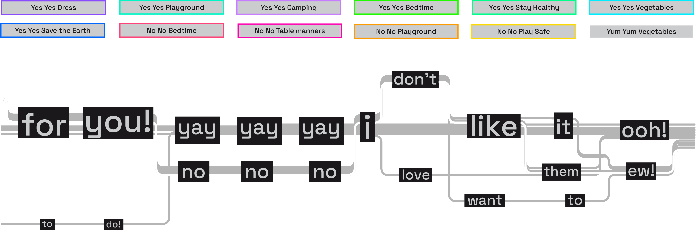
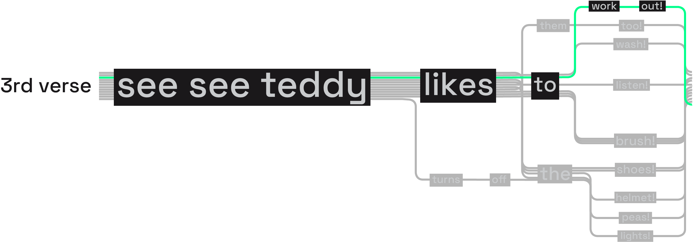
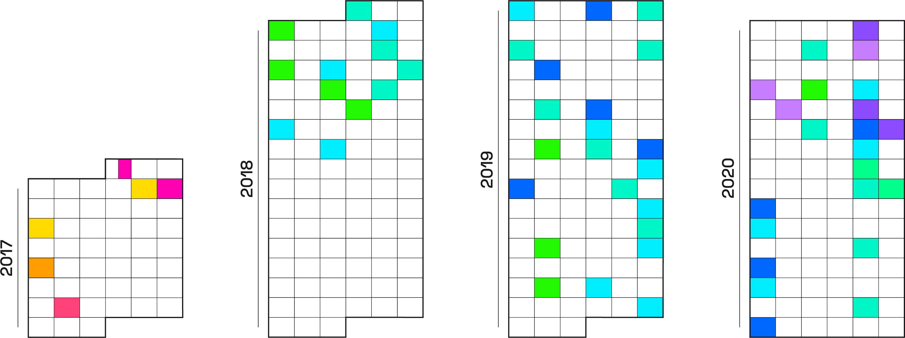

On 20 February 2020, Bloomberg Businessweek published an article about Cocomelon’s success: many critics argued that it was not depending on contents, but on a “savvy manipulation of Youtube’s recommendation system” On the hot spot was the “no no baby” viral video case, claimed to be repeatedly exploited by the channel, causing its success boom in 2017. Here we focus on this phenomenon, analysing each first strophe’s version of Cocomelon’s most popular format ▎
The first version of this format, the “Yum Yum” song, was rapidly abandoned in favor of the much more viral friendly “No no” and “Yes Yes” songs and no variation was ever applied to it, unlike the others.

The entire range of songs just changes a few parts in its lyrics, keeping always the same simple melody. Apart from “Yes” or “No” forms, variations chosen are taken from typical children keywords, easy to be queried and found.

“Yes” and “No” songs have been repeatedly published in single videos or in long video compilation from 2017 until now, occupying a high percentage of total videos uploaded in the channel.
